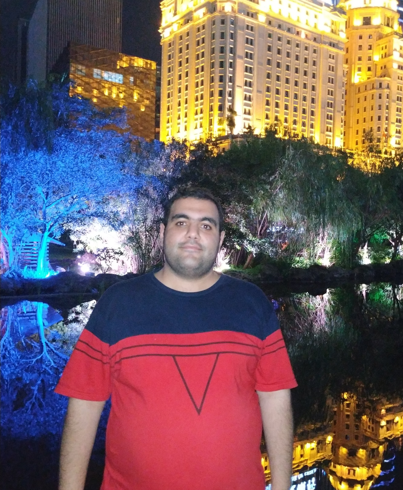

Cryptography & security researcher
Reza Saadi
I design password-based and post-quantum authentication protocols, connecting formal security with reproducible implementations.
M.Sc. researcher at Koç University KU-Crypto Lab

Selected work
Publications and manuscripts
Research
Three connected research directions
My work moves between protocol design, formal security arguments, implementation, and realistic performance evaluation.
Reproducible systems
Selected software artifacts
Contact
Interested in authentication, MPC, or post-quantum security?
I welcome research discussions and collaboration opportunities.